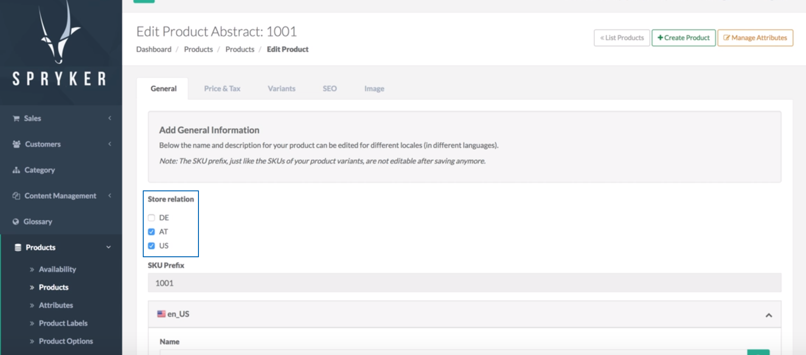

Release Notes - February - 1 2018
Please note, that we do not have Toran Proxy anymore, it has been shut down completely. Please use Packagist from now on. See more here.
- Release Notes - February - 1 2018
- Features
- Improvements
- Multiple Mappings Per Single Import
- Fixing Compatibility Issues In All FormTypes
- New Fields on Customer Account Page
- Bugfixes
- Product Editing
- Filter Names
- Code Propagation Fix For Correct CI Results
- Adding Missing Attributes to Product Module
- Images Display in Administrator Interface
- Arvato RSS Fixes
- Documentation Updates
Features
Product Search Widget
Previously we had only product list widgets for which the products were selected based on their SKUs, whereas the selection was static and did not take product availabilities into account. In this release we are introducing a new Product Search widget which makes it possible for the shop administrator to define rules for the widget by building an Elasticsearch query where the administrator specifies what data should be included in the product search result. This makes the product selection with the Product Search widget dynamic and fully customizable.
Affected Modules
| Major | Minor | Patch |
|---|---|---|
| - CmsContentWidgetProductSearchConnector 1.0.0 | - Search 7.2.0 | n/a |
Documentation
For module documentation see: Available Widgets.
Migration Guides
To upgrade, follow the steps described below:
- Apply every minor and patch:
composer update "spryker/*"- Once that is done, upgrade to the new module major and its dependencies:
composer require spryker/cms-content-widget-product-search-connector:"^1.0.0"Multi-Store Product Abstract
With this release we are introducing a new feature which allows to manage product abstracts across stores. Now the shop administrator can configure the abstract product appearance per store in the Administration Interface through a store toggle element available for each product abstract. The store toggle element controls the availability of the corresponding product abstract and related product concretes in specific store(s). Customers would be able to see only those abstract products (and their concrete products) which are associated with the store(s) defined by the shop administrator.

Affected Modules
Documentation
For module documentation see:
- Product-Store Relation
- Feature Integration - Multi-Store Products
- Under the Hood - Multi-Store Products
For detailed migration guides see:
- Migration Guide - Collector
- Migration Guide - Product
- Migration Guide - ProductManagement
- Migration Guide - Product Relation
- Migration Guide - Product Relation Collector
- Migration Guide - Touch
Migration Guides
To upgrade, follow the steps described below:
- Apply every minor and patch:
composer update "spryker/*"- Once that is done, upgrade to the new module major and its dependencies:
composer require spryker/collector:"^6.0.0" spryker/product:"^6.0.0" spryker/product-management:"^0.10.0" spryker/touch:"^4.0.0"Improvements
Multiple Mappings Per Single Import
Previously it was not possible to import multiple mappings for index with one request. In this release the search mapping installer has been changed to import all mappings when index has not yet been created, which makes it possible to use features like parent / child relationship.
Affected Modules
| Major | Minor | Patch |
|---|---|---|
| n/a | - Collector 6.1.0 - Search 7.1.0 |
n/a |
Fixing Compatibility Issues In All FormTypes
Previously some Spryker forms used deprecated code from Symfony. With this change, we have made sure all forms are not using code deprecated in Symfony Form 2.8. Mainly the string representation of types has been replaced with FQCN, for example $builder->add('foo', 'text') has been replaced with $builder->add('foo', TextType::class). We have also removed all constructors from the forms as the FormFactory no longer accepts instances of form types. All forms now extend Spryker's AbstractType to get access to getFactory(), getFacade(), getConfig() and getQueryContainer(). If your forms have a constructor, please remove it and access what you need from inside the forms from now on.
Affected Modules
New Fields on Customer Account Page
In certain cases a shop owner might need to know more specific information about the clients, like, for example, their phone number, date of birth, locale or company they are working for. With this release we have added Phone, Date of Birth, Company and Locale fields to "Create" and "Edit" pages in Customers section in the Administrator Interface, which allows to keep record of the necessary customer data.
Affected Modules
| Major | Minor | Patch |
|---|---|---|
| n/a | - Customer 7.3.0 | n/a |
Bugfixes
Product Editing
Previously, when trying to save a product in edit mode, an error happened, since a wrong QueryContainer was used. This has been fixed, the product is saved fine now.
| Major | Minor | Patch |
|---|---|---|
| n/a | n/a | - ProductManagement 0.10.2 |
Filter Names
Previously we had an issue with filter names in the Administration Interface. This issue has been fixed, the filter names are correct now.
Affected Modules
| Major | Minor | Patch |
|---|---|---|
| n/a | - ProductCategoryFilter 1.2.0 - ProductCategoryFilterGui 1.1.0 |
n/a |
Code Propagation Fix For Correct CI Results
Previously we had an issue with CodeSniffer console: it was not outputting an error code when a CS issue was found. This has now been resolved.
Affected Modules
| Major | Minor | Patch |
|---|---|---|
| n/a | n/a | - Development 3.6.1 |
Adding Missing Attributes to Product Module
Previously, when updating the product module to spryker/product 5.4.0, AttributeLoader::getCombinedAbstractAttributeKeys() method returned an array with not all the attributes. This issue has now been fixed so that all attributes that were there before the package update, are retrieved after the update as well.
Affected Modules
| Major | Minor | Patch |
|---|---|---|
| n/a | n/a | - Product 5.4.2 |
Images Display in Administrator Interface
Previously, when opening product page in "View" or "Edit" mode in the Administrator Interface, the images with URLs were not displayed. This issue is solved with this release - all product images are displayed correctly in "View" and "Edit" mode now.
Affected Modules
| Major | Minor | Patch |
|---|---|---|
| n/a | n/a | - ProductManagement 0.9.3 |
Arvato RSS Fixes
Previously we had several issues with Arvato RSS:
- from time to time an error, related to empty AddressValidationResponse field, occurred on Yves;
- communication token was not processed when executing RSS-check in checkout and getting a valid response from RSS Arvato;
- StoreOrderRequestMapper was mapping idCustomer instead of customerReference;
- when executing a risk check and getting a correct address back, additional address field was missing in the response transfer;
- even if delivery address was equal to billing addresses, the delivery address was sent with the request as well.
All these issues have been fixed in this release.
Documentation Updates
The following content has been added to the Academy:
- Using Packagist For Module Download
- Installation Guide - Windows (Docker)
- Migration Guide - Multi-Currency
- Migration Guide - Price
- Migration Guide - Price Cart Connector
- Migration Guide - Product Label GUI
- Migration Guide - Product Relation
- Migration Guide - Product Relation Collector
- Migration Guide - Product Set GUI
- Multi-Currency - Search
- Migration Guide - Touch
- Product-Store Relation
- Feature Integration - Multi-Store Products
- Under the Hood - Multi-Store Products
- Available Widgets
Your feedback would be highly appreciated. Please help us understand what you need from the Spryker Academy by filling out a very short survey here.